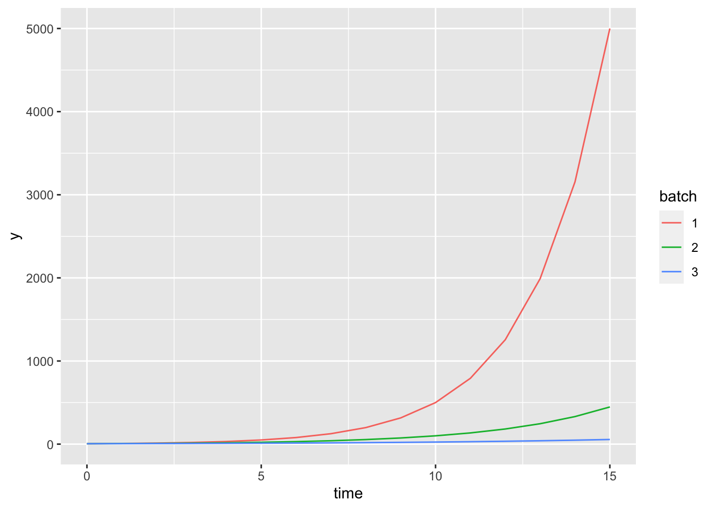
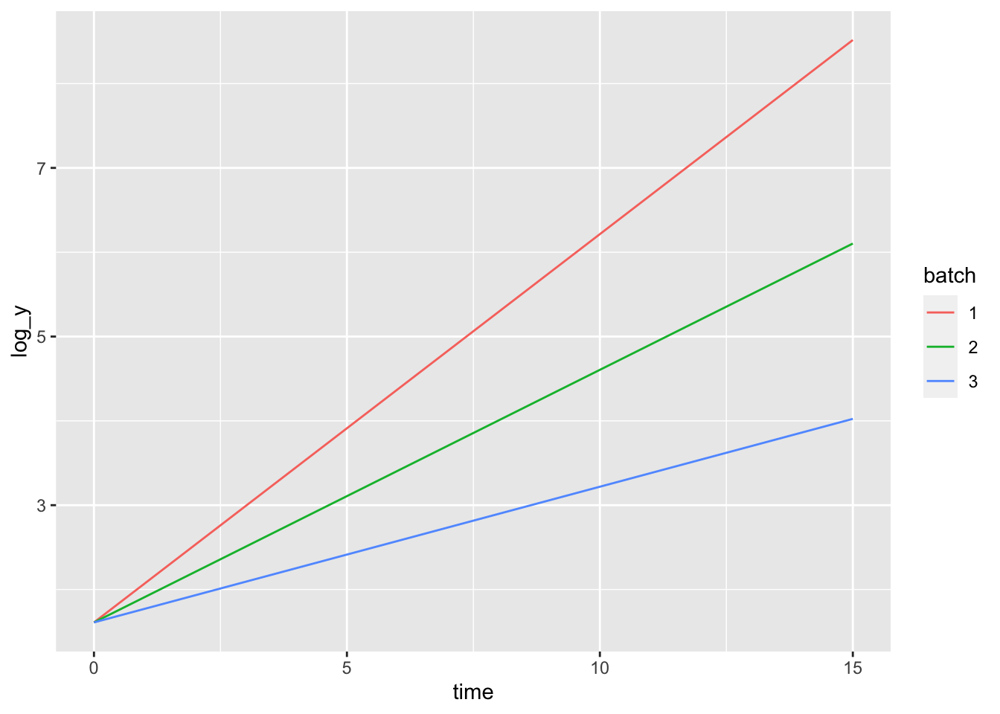
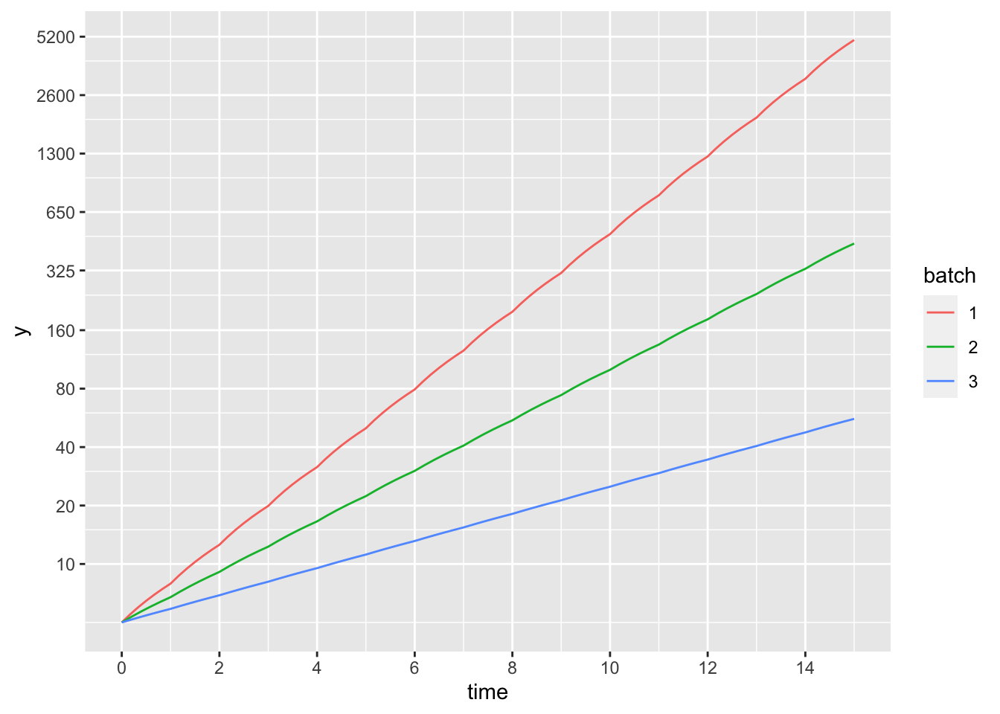
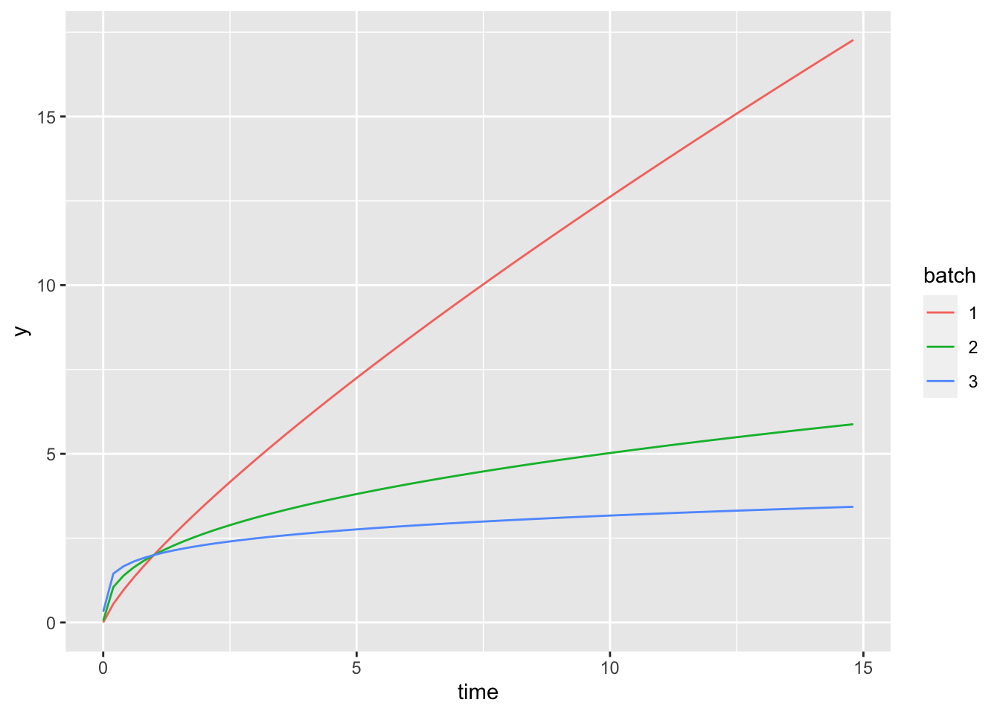
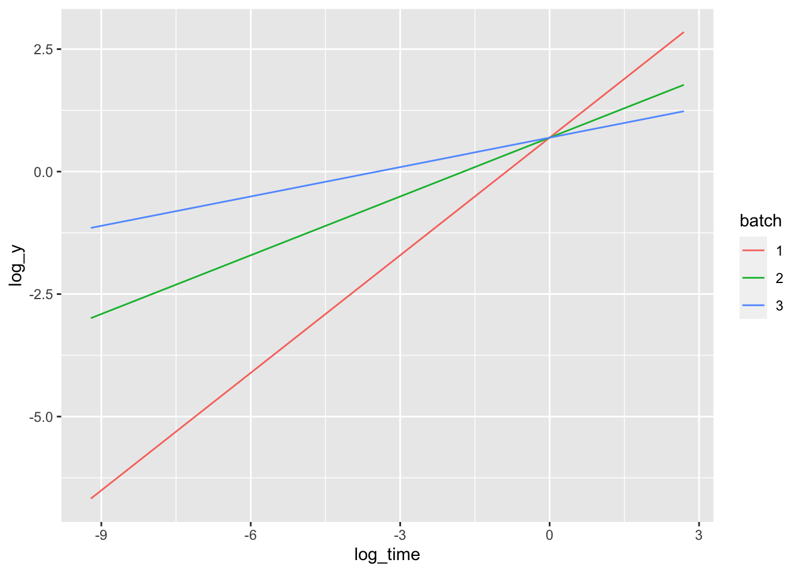
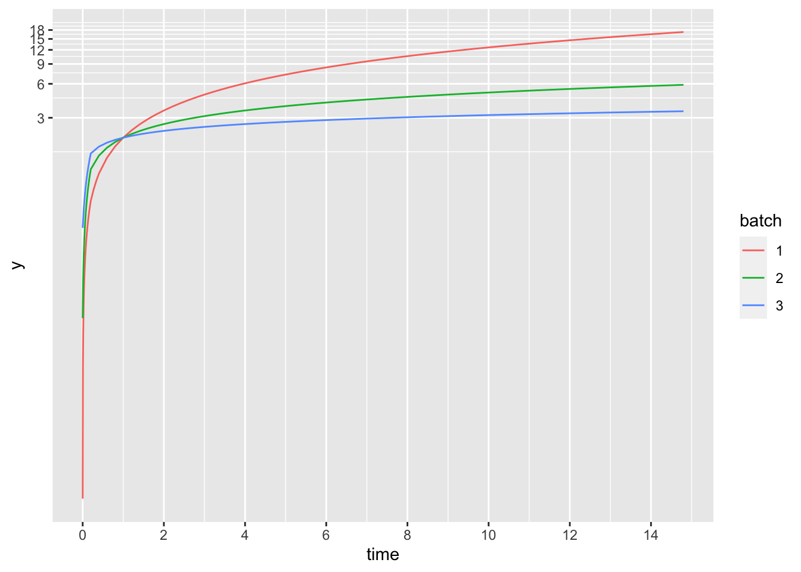

1 Mawaqif
1.2 Exponential models
\(y = A e^{bt}\)
\(t = 0, y = 5\)
\(A = 5\)
Three states:
\(t = 10, y_1 = 500, y_2 = 100, y_3 = 25\)
\(b = (\log y - \log 5) / t\)
\(b_1 = (\log 500 - \log 5) / 10 = 0.461\)
\(b_2 = (\log 100 - \log 5) / 10 = 0.300\)
\(b_3 = (\log 25 - \log 5) / 10 = 0.161\)
tt = 0:15
y1 <- A * exp(b_1 * tt)
y2 <- A * exp(b_2 * tt)
y3 <- A * exp(b_3 * tt)
dd1 <- data.frame(time = rep(tt, 3), y = c(y1, y2, y3),
batch = rep(1:3, each = length(tt)))
dd1$batch <- factor(dd1$batch)
ggplot(dd1, aes(x = time, y = y, colour = batch)) +
geom_line()
\(y = A e^{bt}\)
is the same as
\(\log y = \log A + bt\)
dd1$log_y <- log(dd1$y)
ggplot(dd1, aes(x = time, y = log_y, colour = batch)) +
geom_line()
ggplot(dd1, aes(x = time, y = y, colour = batch)) +
geom_line() +
coord_trans(y = 'log') +
scale_x_continuous(breaks = c(0:8*2)) +
scale_y_continuous(breaks = c(10, 20, 40, 80, 160, 325,
650, 1300, 2600, 5200))
For a one unit increase in time, the change in \(y\) is:
\(\log y_j - \log y_i = b\)
So, \(y_j = e^b y_i\)
For batch 1, \(e^b = e^{0.461} = 1.59\), so for each one unit increase in time, \(y\) increases by a factor of 1.59 or by 59%.
Values of batch 1 at times from 0 to 15:
round(y1, digits = 3)## [1] 5.000 7.924 12.559 19.905 31.548 50.000 79.245
## [8] 125.594 199.054 315.479 500.000 792.447 1255.943 1990.536
## [15] 3154.787 5000.000Ratios of \(y_{1, k} \, / \, y_{1, k-1}\) for some values are shown below, noting that \(e^{b_1} =\) 1.585.
For an increase of two units in time, \(\log y_j - \log y_i = 2b\), so \(y_j = e^{2b} y_i\).
\(\;\;e^{2b_1} =\) 2.512
rat_21 <- round(y1[2] / y1[1], digits = 3)
rat_32 <- round(y1[3] / y1[2], digits = 3)
rat_10_9 <- round(y1[10] / y1[9], digits = 3)
rat_15_13 <- round(y1[15] / y1[13], digits = 3)| Times | Ratio |
|---|---|
| 1 & 2 | 1.585 |
| 2 & 3 | 1.585 |
| 9 & 10 | 1.585 |
| 13 & 15 | 2.512 |
Doubling time
When has \(y\) reached double its initial value - i.e. when is \(y = 10\)? Doubling time is \(t_{\mathrm{dbl}}\).
\(e^{bt_{\mathrm{dbl}}} = 2\)
\(t_{\mathrm{dbl}} = \log 2 / b\)
For batch 1: \(t_{\mathrm{dbl}} = \log 2 / 0.461 = 1.51\)
For batch 2: \(t_{\mathrm{dbl}} = \log 2 / 0.300 = 2.31\)
For batch 1: \(t_{\mathrm{dbl}} = \log 2 / 0.161 = 4.31\)
t10 <- 5
t12 <- t10 + t_dbl_1
t22 <- t10 + t_dbl_2
t32 <- t10 + t_dbl_3
y11 <- round(A * exp(b_1 * t10), digits = 2)
y21 <- round(A * exp(b_2 * t10), digits = 2)
y31 <- round(A * exp(b_3 * t10), digits = 2)
y12 <- round(A * exp(b_1 * t12), digits = 2)
y22 <- round(A * exp(b_2 * t22), digits = 2)
y32 <- round(A * exp(b_3 * t32), digits = 2)Table below shows value of \(y\) at time = 5 and then at time = (5 + doubling time).
| Batch | time 1 ( = 5) | time 2 ( = 5 + t_dbl) |
|---|---|---|
| 1 | 50 | 100 |
| 2 | 22.36 | 44.72 |
| 3 | 11.18 | 22.36 |
1.3 Power function
\(y = Cx^b\)
This becomes \(\log y = \log C + \log(x^b)\) or \(\log y = c + b \log x\).
Take \(C = 2\) and \(b_4 = 0.8, b_5 = 0.4, b_6 = 0.2\)
C <- 2
b_4 <- 0.8
b_5 <- 0.4
b_6 <- 0.2
tt = seq(0.0001, 15, by = 0.2)
y4 <- C * tt^b_4
y5 <- C * tt^b_5
y6 <- C * tt^b_6
dd2 <- data.frame(time = rep(tt, 3), y = c(y4, y5, y6),
batch = rep(1:3, each = length(tt)))
dd2$batch <- factor(dd2$batch)
ggplot(dd2, aes(x = time, y = y, colour = batch)) +
geom_line()
dd2$log_y <- log(dd2$y)
dd2$log_time <- log(dd2$time)
ggplot(dd2, aes(x = log_time, y = log_y, colour = batch)) +
geom_line()
ggplot(dd2, aes(x = time, y = y, colour = batch)) +
geom_line() +
coord_trans(x = 'log') +
coord_trans(y = 'log') +
scale_x_continuous(breaks = c(0:8*2)) +
scale_y_continuous(breaks = c(0:6*3))
1.4 Variable selection
1.4.1 Davison 2003, Statistical Models
pp. 400-401
Automatic variable selection methods can fit complicated models to random data.
They are widely used but have no theoretical basis.
The rules used for deciding which variables to include vary and are arbitrary - various cut-offs for t or F values are used, for example; sometimes AIC is used.
These methods can be useful for screening.
Knowledge of the system being studied is essential in model building.
p. 402
Some measure of how well a model fits is a reasonable criterion to use.
Residual SS decreases the more terms are added, so this is not satisfctory.
A useful approach is to penalise a model according to its complexity and balance this against a measure of how well the model fits the data.
AIC is one approach of this type. It provides a balance between the fit of the model and its simplicity.
AICc, the corrected AIC, is best when the number of parameters is comparable to the number of rows of data (i.e. p is comparable to n).
p. 404
There may be a number of models with similar AICcs. If a single model is needed, use expert knowledge to choose it, if possible.
If more than one model is plausible, then accept that as the conclusion and discuss them.
p. 405
If automatic variable selection methods are used, making inferences after this model selection is restricted. The only covariates for which standard confidence intervals are reliable are the ones where the evidence that they be included in the model is very strong.
1.4.2 Faraway 2014, Linear Models with R
p. 153
Do not use testing-based variable selection methods.
With methods that are based on P values, so much multiple testing results in P values losing their usual meaning so that the overall process lacks validity.
The testing-based procedures are not directly related to the overall objectives, namely, to find the best prediction or explanatory model. Variable selection inflates the statistical significance of variables that are kept in the model. Variables that are dropped are not necessarily unrelated to the response variable; they just do not contribute any extra explanatory value over the ones already in the model. The point of this is a bit unclear. What do other writers say about this?
p. 159
Use information-criterion-based methods for model selection (e.g. AIC, BIC, adjusted \(R^2\), Mallow’s \(C_p\))
If a number of models fit about the same as one another, accept it! Look at whether
they each provide different but plausible explanations of the response
they give similar predictions
one or some have better model diagnostic features
one or some include predictors that are cheaper or easier to measure
p. 161
Problems in having too many predictors in a regression model include:
collinearity - this can impede how well a model explains the response
the quality of predictions from the model can be reduced (Faraway probably means by this that the variance of predictions is increased)
The apparent contradiction is that more predictors should mean more information! There are methods that help to shrink this extra information into a useful form:
PCA
partial least squares (p. 172)
this constructs orthogonal linear combinations of predictors as new predictors
these combinations are explicitly constructed to predict Y as well as possible
ridge regression (p. 174)
it produces coefficients which are not very large, which is reasonable if you have a lot of candidate predictors and you think many of them have an effect on the response
this shrinks coefficients, which are normalised (i.e. centred by their means and scaled by their SDs), towards zero
it’s a form of penalised regression
LASSO
1.4.3 Faraway 2016, Extending the Linear Model with R, 2nd ed.
p. 203
For linear mixed models, information-based criteria can be used. However, there are some problems with LMMs:
because of dependence in the data, the effective sample size is less than the total number of cases
it isn’t clear how to count the number of fixed effect parameters and random effect parameters together
most information-criteria measures are based on the likelihood, which does not behave well when parameters are estimated at the boundary of the parameter space as can happen with variance components
The AIC can be used when the models to be compared differ only in their fixed effects. If random effects also vary, how to count the number of parameters is a problem.
The BIC, which replaces the penalty of \(2 \; \times\) no. of parameters in the AIC with the term, \(p\log(n)\), can also be used. It penalises larger models more heavily than the AIC and favours smaller models than the AIC.
1.4.4 Weisberg 2014, Applied Linear Regression, 4th ed.
pp. 234-235
Methods for selecting variables in regression modelling depend on the purpose of the analysis:
what is the effect of a focal predictor? - examine the effect of a focal predictor, or a few predictors, on a response - including extra predictors apart from those of interest could help the interpretation or increase the precision of tests and estimates; including too many could decrease the precision
which of a number of potential predictors are active? - determine the predictors that are associated with the response - i.e. distinguish the active predictors from the inactive ones; (estimating coefficients and testing whether coefficients are different from zero are not the main point of “variable discovery”, p. 242)
predict values of a response using the predictors - including too many predictors could produce inaccurate predictions because too much detail in the observed data is incorporated (i.e. overfitting); not including enough predictors can produce inaccurate predictions if important predictors are excluded (i.e. biased predictions, as mentioned by someone below)
Looking for active predictors
pp. 237ff
One approach is looking at groups of predictors and picking one that maximises some selection criterion.
- Common criterion is AIC (as well as BIC).
p. 239
Stepwise methods
these methods are not guaranted to give you the model with the optimal value of the selection criterion but they can be useful (p. 240)
estimating coefficients and testing whether coefficients are different from zero are not the main point of “variable discovery” (p. 242)
after selecting a subset of variables, the \(t\) values and associated \(P\) values for coefficients cannot be trusted (as the \(t\) values may not follow a \(t\) distribution)
methods that select subsets exaggerate significance of, for example, \(F\) statistics comparing models and \(t\) statistics for coefficients in models
p. 244
Regularised methods - LASSO (incl. variant, elastic net)
- work on the basis that as few predictors as possible are needed to model a response
- work well on randomly sampled data and model with no factors or interaction
p. 245
Developing a model for prediction
Possible approaches
model averaging (incl. Bayesian model averaging) - v. Hoeting tutorial
cross-validation
general question of getting predictions from training data has led to development of machine learning; methods include neural networks, random forests, …
1.4.5 Harrell 2015, Regression Modeling Strategies, 2nd ed.
pp. 67-68
Stepwise methods of variable selection have no statistical justification.
They result in:
- \(R^2\) values that are too high
- \(F\) and \(\chi^2\) statistics that are not distributed according to those distributions
- P values that are too small
- SEs that are too small
- model coefficients that are too large
p. 69-70
Do not use stepwise variable selection methods; use full-model fits or data reduction methods instead.
If you have to use stepwise variable selection:
- first of all, fit the full model and do a global test of no regression
- if this global test is not significant, it is not justifiable to pick out individually significant predictors
- if the global test is significant, use a stopping rule based on the AIC - i.e. smallest AIC (but there are no stopping rules for data-driven variable selection); if someone insists on using a stopping rule based on P values, use \(\alpha = 0.5\)
- use backwards elimination rather than forwards selection
- it ensures you see the full model, which is the only one with accurate SEs, residual MS and P values
- Lawless and Singhal’s method (implemented with fastbw in rms package) is very efficent
p. 70
Bootstrapping can help you choose between the full and a reduced model.
pp. 71-72
Sometimes variables can be grouped (by subject matter or empirical correlations), tested as a group and kept or removed.
Possibly the most accurately measured variable in a group can be retained (v. p. 79f).
Lasso is a useful penalised estimation technique - it forces some coefficient estimates to be zero and in this way carries out variable selection, while also, however, shrinking the remaining coefficients to take account of the overfitting caused by using a data-based model selection method
Screening each variable singly and using only individually significant variables in a multivariable model can miss variables that become important only after adjusting for other variables.
Sample size, overfitting …
“Overfitting” happens when the model fits some of the noise and not just the signal; it also happens when you find questionable associations between explanatory variables and the response variable.
A good general recommendation where there is a continuous response variable, for example, is to have no more than one candidate predictor variable per 15 observations (this includes interaction terms, if any). ??? df or terms?
If there are explanatory variables with a narrow range of values, you’ll need a larger sample than the above recommendation.
p. 78 (In section on “shrinkage”)
Penalised methods are very good ways to deal with the “too many variables, too little data” problem (more detail in s. 9.10).
Some useful shrinkage methods are:
- ridge regression
- penalised ML estimation
Cross-validation or AIC has to be used to choose the penalty factor.
p. 78 Collinearity
When one predictor can be predicted well from the others or expressed as a combination of the others, collinearity is present (i.e. if \(\textbf{Xa} = \textbf{0}\), where \(\textbf{X}\) is the incidence matrix and \(\textbf{a}\) is a vector of constants).
This can inflate the SEs of the regression coefficients.
It can also make selecting “important” variables unreliable.
When groups of highly correlated variables are identified, they can be tested as a whole set with a multiple d.f. test, rather than using a one d.f. test on a single predictor.
To quantify collinearity, use the variance inflation factor.
p. 79 Data reduction
- Use expert knowledge and previous research to remove unimportant variables from the candidate variables
- Remove variables that have distributions that are too narrow
- Remove variables that have a large number of missing values
pp. 89-90
Recommended approaches
- Fit a full model without removing non-significant predictors
- Use data reduction methods to reduce dimensionality
- Use shrinkage (i.e. penalised estimation) to fit a large model and not worry about sample size
pp. 94ff Harrell’s summary
Developing models to find active predictors
Collect as much data as possible; ensure predictor variables have wide distributions
Frame good hypotheses that specify predictor variables that are relevant, including interactions, if appropriate - do not use the response variable in this process of specifying predictors either graphically, using descriptive statistics or doing hypothesis tests of estimates (i.e. use expert knowledge to “screen” potential candidate predictors)
Impute values as appropriate - see text for details
Either use cross-validation or bootstrapping, or hold out some sample data as test data
The following steps need to be carried out on each bootstrap or cross-validation sample.
When you can test the model for complexity in a structured way, you might be able to simplify it without using penalisation methods - e.g. test a group of predictors based on one P value (which is hopefully outside range of 0.05 to 0.2)
Check additivity by testing all prespecified interaction terms; if the test is unequivocal (e.g. P > 0.3), drop all interaction terms.
Developing models for estimating effects
These are models for getting point or interval estimates for the response at various combinations of the predictors
- Parsimonious models are less important here, as including all predictors means there is a greater chance the CI for the effect of interest actually is the size stated; on the other hand, including unimportant predictors increases the variance of predicted values
Developing models for testing hypotheses
Very similar strategy as for models for estimating effects
Parsimony has little importance as a full model fit, with non-significant variables, gives more accurate P values for variables of interest
It is important to consider interactions; a well-defined test is whether an interaction should be included or not
Model validation is not necessary
p. 118 Simplifying the final model by approximation
A model with all prespecified terms usually produces the most accurate predictions on new data
Predictions are conditional on all predictors
If a predictor is not significant, predictions can be obtained by using weights, based on the fraction of values of each level of that predictor - if a factor - in the data, to make the predictions unconditional on that predictor (e.g. average over categories of ethnicity).
If there are several non-significant predictors that need to be averaged over in the above way, the process is unwieldy.
What to do about this is a bit over the top!
1.4.6 David Warton’s draft book, chapter 5
p. 121
Variable selection or model selection is a type of inference. Inference can take various forms, including:
- hypothesis testing - seeing whether data are consistent with a particular hypothesis
- parameter estimation - finding a plausible range of values (confidence interval) for a parameter of interest
- variable (model) selection - finding the set of predictor variables that characterise the true process by which the data are generated (inference by using a sample to draw general conclusions about how well a set of explanatory variables can predict)
pp. 118-119
Purpose of model selection:
- maximise predictive capability - i.e. find the model that would give best predictions of the response given new data
You need to choose the “right” number of predictors - i.e. the “right” level of model complexity.
A model that is too small gives biased predictions.
A model that is too big results in predictions with increased variance. This is because the model fits noise as well as signal.
Bias-variance trade-off is inevitable. How find the right balance? It depends on:
- how much data you’ve got
- how relatively complex the models being compared are
- how strong the signal is in each model
R-squared values cannot take account of how complex models are.
Using P values to remove non-significant predictors is not appropriate as there is no real a priori hypothesis being tested.
p. 121 (again)
Comparing a lot of models is of doubtful value as using the data alone to produce the best model is unreliable.
It’s important to simplify potential models - use expert knowledge to remove unnecessary predictors.
Comparing predictive models
The easiest way to compare models is to see how well they predict from new data - this is “validation”. Get new data or split data into a training set and a test set - the split needs to be random, the two sets must be independent.
(\(K\)-fold) cross-validation can be used here (p. 125) - split the data into \(K\) groups and use each group once as the test data, fitting \(K\) models in all; in each modelling run, hold out the particular test group, fit the model to the remaining \(K-1\) groups combined and then compare the model predictions to the test observations; pool measures of predictive performance across all the runs.
How do you choose the size of the training sample? Maybe along the lines of Shao’s method - as sample size increases, use a larger number of observations but a smaller proportion of the total sample size. Some suggestions:
- leave-one-out (i.e. \(N\)-fold c.v.) if n < 20
- 10-fold c.v. for \(20 < n < 100\)
- 5-fold c.v. for \(n > 100\)
How do you measure predictive performance?
- For linear regression (assuming constant variance) use mean squared error
- Use the whole data set (no splits) and penalise larger models by means of an information criterion - e.g. AIC, BIC (p. 127)
- what about the GIC ???
- AIC overfits and is good if you want a prediction model; BIC does not overfit and is good for variable selection
Information criteria - advantages and disadvantages
- no random split in data so same answer and simpler to interpret
- less intuitive than cross-validation as they judge predictive capability on new data indirectly (as there is no new data!)
- they rely on the model being close to the correct model; cross-validation requires only that the training and test data are independent
p. 130 Subset selection
No clear winner among forwards, backwards or all subsets methods
- All subsets
- more comprehensive but because so many models may be involved, there’s no guarantee it will yield best model
- if there are lots of explanatory variables, it’s not practical
- Backwards elimination
- not a good idea if there are a large number of explanatory variables, as full model could be quite unstable with some parameters that are not well estimated
- Forwards selection
- with lots of explanatory variables, this might be a better place to start
- not a good method if the optimal model ends up with a lot of terms, as there are lots of steps in getting to that model where things can go wrong
- Multi-collinearity
This can undermine how stepwise methods work as the chance of a particular term being added to the model drops substantially if it’s correlated with a term already in the model
p. 134 Penalised estimation
A more modern and good way to do subset selection - e.g. LASSO
Parameter estimates are pushed towards zero - this introduces bias but reduces variance, so there’s a bias-variance trade-off here
Penalised estimation is good when:
- you want to predict the response, as this method reduces variance of predictions
- you have lots of terms in your model or not a large sample relative to the number of terms
LASSO does variable selection by forcing some parameter estimates to be zero - if the parameter estimate for a term is zero, the terms drops out of the model
LASSO - advantages and disadvantages
- it does model selection as part of its routine and simplifies this model selection to estimating a single nuisance parameter that is part of the penalty term
- it produces good predictions by reducing variance
- parameter estimates are, unfortunately, biased
- standard errors are not easily available
1.4.7 James et al. Introduction to Statistical Learning, 2017 (corrected printing)
p. 30 Assessing model accuracy
For linear regression models, a common way of measuring how well the predictions a model makes match the observed data is to use the residual mean square or mean squared error.
This says how well the model works on the training data used to fit the model (i.e. the training data).
What’s more interesting and important is how well the model would perform on new data (i.e. test data).
For example, suppose we have clinical measurements on a group of patients (e.g. age, BP, gender, height, weight) and whether each patient has diabetes. We can develop a model using this data to predict risk of diabetes. We are particularly interested whether this model accurately predicts the risk of diabetes for future patients.
How can you minimise the test MSE?
If test data is available, use this test data set and pick the method that gives smallest MSE.
If no test data is available, you could use the method that gives the smallest MSE for the training data …. But no! Lots of modelling methods specifically minimise the MSE in the fitting process; these methods can give quite a small MSE for the training set but give a much larger MSE on test data.
p. 32 - direct quote
… as the flexibility of the statistical learning method increases, we observe a monotone decrease in the training MSE and a U-shape in the test MSE. This is a fundamental property of statistical learning that holds regardless of the particular data set at hand and regardless of the statistical method being used. As model flexibility increases, training MSE will decrease, but the test MSE may not. When a given method yields a small training MSE but a large test MSE, we are said to be overfitting the data. This happens because our statistical learning procedure is working too hard to find patterns in the training data, and may be picking up some patterns that are just caused by random chance rather than by true properties of the unknown function \(f\).
p. 34
Note explanation of bias and variance in context of modelling (or statistical learning).
Variance is the amount by which estimated response values would change using different training data. See example in test.
Bias is the error caused by approximating a possibly quite complex real-life system by a much simpler model.
As the flexibility of a model increases, the variance increases and the bias decreases.
p. 75
Important questions when doing multiple linear regression:
- is at least one predictor useful in predicting response?
- do all predictors, or only some of them, help to explain the response?
- how well does the model fit the data?
- given specific values for predictors, what is the predicted response value and how accurate is it?
pp. 79 and 208
If \(p > n\), backward elimination cannot be used, as you cannot fit the full model; forward selection can always be used but if \(p > n\), you cannot get a unique solution and can only fit submodels.
p. 92
Brief overview of potential problems with regression model:
- non-linearity of relationships between response and predictor
- correlation of errors (non-independence)
- non-constant variance of errors
- outliers
- points with high leverage
- collinearity - note very interesting plots showing effect of collinearity on estimated coefficients - fig. 3.15
Chapter 6 Linear model selection
pp. 205-210
All subsets, forward selection, backward elimination and hybrid approaches are outlined.